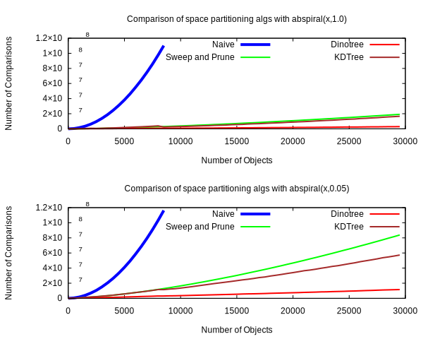
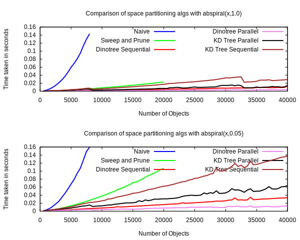
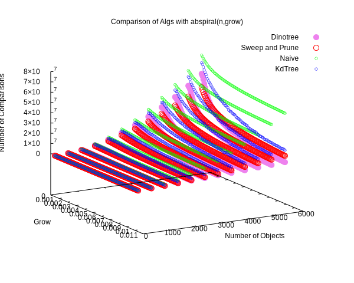

Comparison against other Algorithms
The below chart compares different algorithms both in terms of comparisons and benches. The naive algorithm is clearly the slowest, with sweep and prune next, then KD Tree followed by dinotree. It is interesting to note that the real world bench times matche closely with the theoretical number of comparisons. So that means that the number of comparisons performed is proportional to the real world performance of this algorithm. The lines are more smooth (and deterministic) than the benches since an everyday laptop has more tasks to do and might also throttle itself half way through a bench.
The way in which the benches are graphed is also slightly misleading. Every graph that graphs the load over size n does so first by benching for n=1, then n=2, n=3, etc. This means that you can see trends in the graph where the cpu throttles, for example, and see if all happen in the same area in the graph. If more samples were taken of each n, and in a random order, this would not be apparent. So for these graphs the x axis is n, but it's also in a way time. In reality this isn't that big of a deal, as long as we can clearly see a trend as n increases.
The jumps that you see in the theoretical dinotree line are the points at which the trees height grows by one. It is a complete binary tree so a slight increase in the height by 1 causes a doubling of nodes so it is a drastic change. As the number of bots increases it is inevitable that sometimes the tree will be too tall or too short.
It's also worth noting that the difference between sweep and prune and kdtree and naive is much bigger than the difference between sweep and prune and kdtree and dinotree. So using these simpler algorithms gets you big gains as it is. The gains you get from using dinotree are not as pronounced, but are noticeable with more elements.
 The below chart shows a 3d view of the characteristics of naive, sweep and prune, and dinotree.
There are a couple of observations to make here. First, you might have noticed that the naive algorithm is not completely static with respect to the spiral grow. This is because the naive implementation I used is not 100% naive. While it does check every possible pair, it first checks if a pair of aabb's collides in one dimension. If it does not collide in that dimension, it does not even check the next dimension. So because of this "short circuiting", there is a slight increase in comparisons when the bots are clumped up. If there were no short-circuiting, it would be flat all across. However, it is clear from the graph that this short-circuiting optimization does not gain you all that much.
Another interesting observation is that these graphs show that sweep and prune has a better worst case than the dinotree algorithm. This makes sense since in the worst case, sweep and prune will sort all the bots, and then sweep. In the worst case for dinotree, it will first find the median, and then sort all the bots, and then sweep. So the dinotree is slower since it redundantly found the median, and then sorted everything. However, it is easy to see that this only happens when the bots are extremely clumped up (abspiral(grow) where grow<=0.003). So while sweep and prune has a better worst-cast, the worst-cast scenario is rare and the dino-tree's worst case is not much worse (median finding + sort versus just sort).
(Sweep and Prune) vs (Kd Tree) vs (KdTree + Sweep and Prune)
Sweep and prune is a simple AABB collision finding system, but it degenerates as there are more and more "false-positives" (objects that intersect on one axis, but not both). Kd Trees are great, but non-point objects that can't be inserted into children are left in the parent node and those objects must be collision checked with everybody else naivley. The tree height might also end up very large to satisfy the requirement that the leaf has only one element. A better solution is to use both.
The basic idea is that you use a tree up until a specific tree height, and then switch to sweep and prune, and then additionally use sweep and prune for elements stuck in higher up tree nodes. The sweep and prune algorithm is a good candidate to use since it uses very little memory (just a stack that can be reused as you handle decendant nodes). But the real reason why it is good is the fact that the bots that belong to a non-leaf node in a kd tree are likely to be stewn across the divider in a line. Sweep and prune degenerates when the active list that it must maintain has many bots that end up not intersecting. This isnt likely to happen for the bots that belong to a node. The bots that belong to a node are guarenteed to touch the divider. If the divider partitions bots based off their x value, then the bots that belong to that node will all have x values that are roughly close together (they must intersect divider), but they y values can be vastly different (all the bots will be scattered up and down the dividing line). So when we do sweep and prune, it is important that we sweep and prune along axis that is different from the axis along which the divider is partitioning, otherwise it will degenetate to pratically the naive algorithm.
KD tree vs Quad Tree
The main benefit of a quad tree is that tree construction is fast since we don't need to find the median at each level. But that comes at a cost of a potentially not great partitioning of the physical elements. Our goal is to make the querying as fast as possible as this is the part that can vary and dominate very easily in desnse/clumped up situations. The slow construction time of the kdtree is not ideal, but it is a very consistent load (doesnt vary from how clumped the elements are).
KD trees are also great in a multithreaded setting. With a kd tree, you are guarenteed that for any parent, there are an equal number of objects if you recurse the left side and the right side since you specifically chose the divider to be the median. This means that during the query phase, the work-load will be fairly equal on both sides. It might not be truely equal because even though for a given node, you can expect both the left and right sub-trees to have an equal number of elements, they most likely will be distributed differently within each sub-tree. For example the left sub-tree might have all of its elements stuck in just one node, while the right sub-tree has all of its elements in its leaf nodes. However, the size of each sub-tree is a somewhat good estimate of the size of the problem of querying it. So this is a good property for a divide and conquer multithreaded style algorithm. With a quad tree, the load is not guarenteed to be even between the four children nodes.
Tree space partitioning vs grid
I wanted to make a collision system that could be used in the general case and did not need to be fine-tuned. Grid based collision systems suffer from the teapot-in-a-stadium problem. They also degenerate more rapidly as objects get more clumped up. If, however, you have a system where you have strict rules with how evenly distributed objects will be among the entire space you're checking collisions against, then I think a grid system can be better. But I think these systems are few and far in between. I think in most systems, for example, its perfectly possible for all the objects to exist entirely on one half of the space being collision checked leaving the other half empty. In such a case, half of the data structure of the grid system is not being used to partition anything. There are also difficulties in how to represent the data structure since every grid cell could have a variable number of bots in side of it. Having a Vec in each cell, for example, would hardly be efficient.